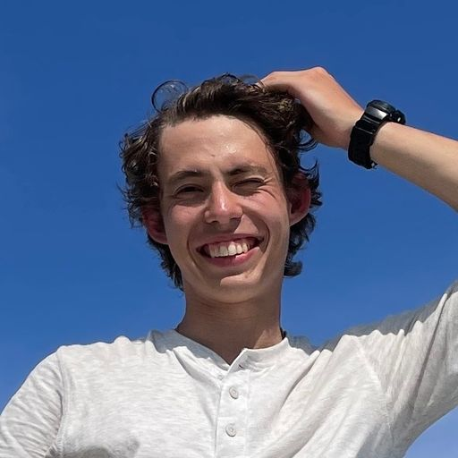
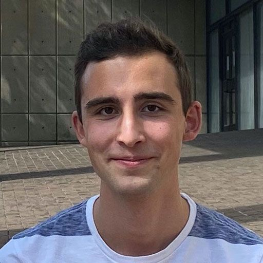
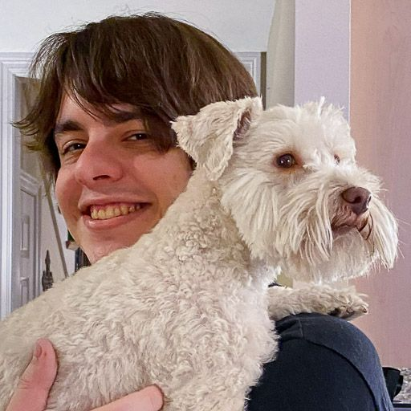
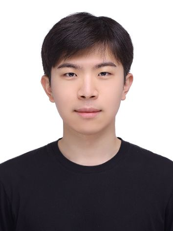
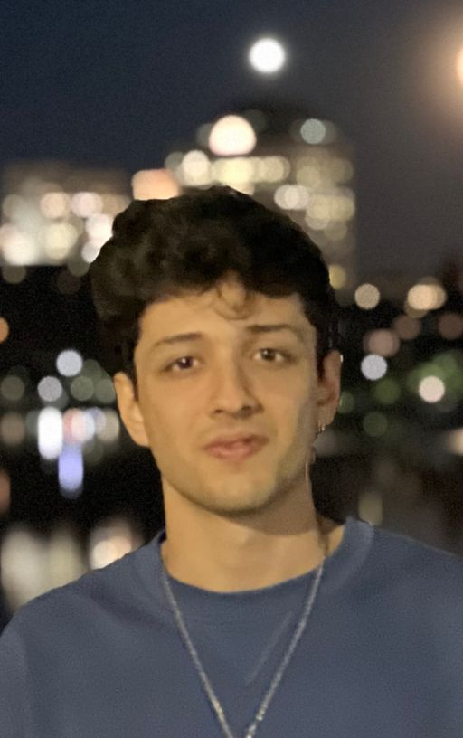
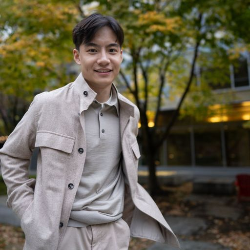
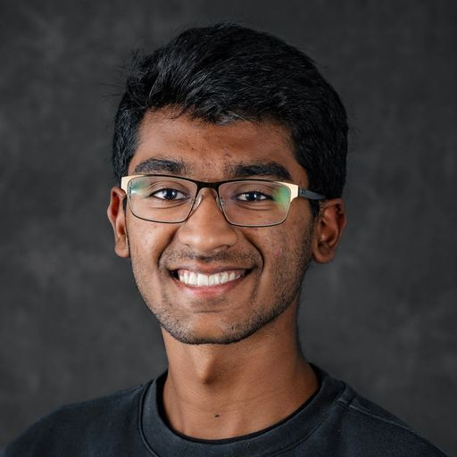
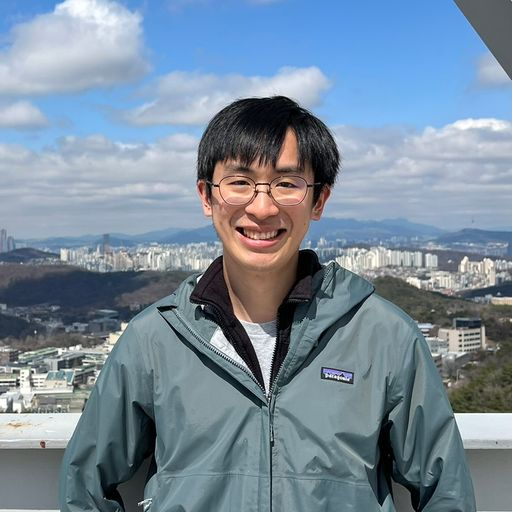
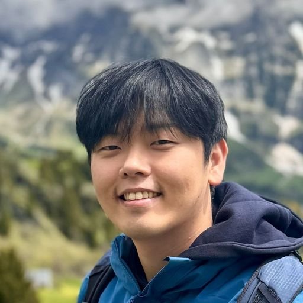

Scene
Representation
Group
The people behind the representations
How can machines form internal models of the world—then use them to predict, plan, and act?
10current researchers
shown here

Artem Lukoianov
PhD student

David Charatan
PhD student

George Cazenavette
PhD student
Ana Dodik
PhD student · Presidential Fellow

Chonghyuk Song
PhD student

Ishaan Chandratreya
PhD student

Sizhe “Lester” Li
PhD student · Presidential Fellow

Adarsh Iyer
Undergraduate researcher

Eric Ming Chen
PhD student · NSF GRFP

Hyunwoo Ryu
PhD student
MIT CSAIL · Scene Representation Group · Current team